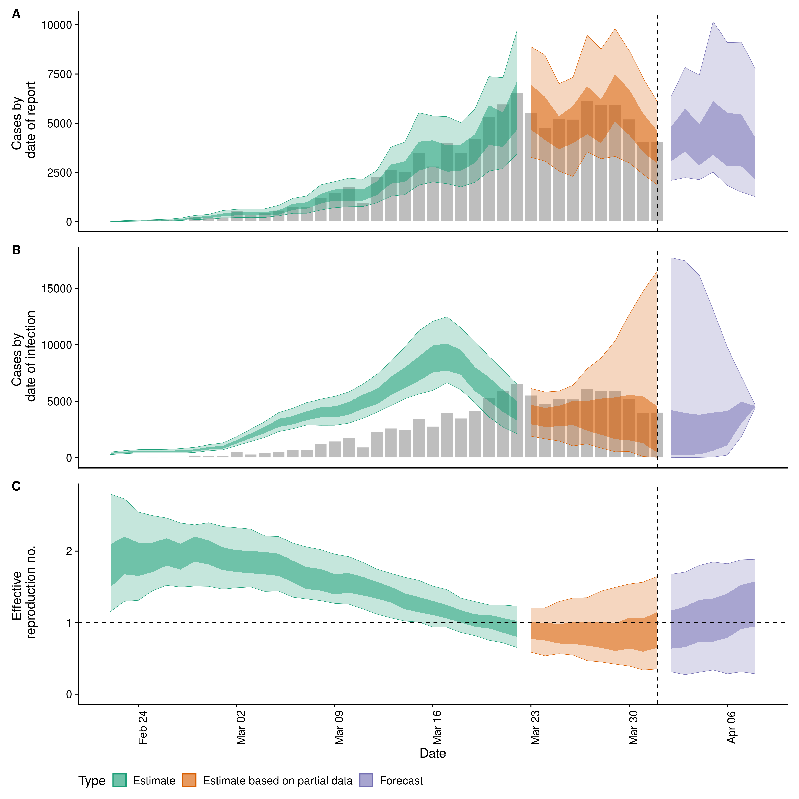

This package is under development with breaking changes likely.
This package estimates the time-varying reproduction number, rate of spread, and doubling time using a range of open-source tools and current best practices. It aims to help users avoid some of the limitations of naive implementations in a framework that is informed by community feedback and is under active development. It assumes that only limited data is available on cases by date of onset and instead uses cases by date of report. These are then imputed to case counts by date of infection using an uncertain reporting delay and incubation period via a Gaussian process based method. Right truncation of cases is dealt with internally by {EpiNow2}, as is propagating uncertainty from all inputs into the final parameter estimates (helping to mitigate spurious findings). Time-varying estimates of the reproduction number are estimated using a similar approach to that implemented in the {EpiEstim} package by date of infection with a generation time estimate that includes uncertainty and variation over time controlled using a Gaussian process. Time-varying estimates of the rate of growth are derived from the time-varying reproduction estimates and the uncertain generation time. Optionally, the time-varying reproduction number can be forecast forwards in time using an integration with the {EpiSoon} package and converted to a case forecast using the renewal equation. Alternatively, the time-varying reproduction number and cases can be forecast using a Gaussian process. See the methods section of our Covid-19 site for a detailed discussion of the approach.
Installation
Install the stable version of the package using {drat}:
install.packages("drat") drat:::add("epiforecasts") install.packages("EpiNow2")
Install the development version of the package with:
remotes::install_github("epiforecasts/EpiNow2")
Windows users will need a working installation of Rtools in order to build the package from source. See here for a guide to installing Rtools for use with Stan (which is the statistical modeling platform used for the underlying model). For simple deployment/development a prebuilt docker image is also available (see documentation here).
Quick start
{EpiNow} is designed to be used with a single function call or to be used in an ad-hoc fashion via individual function calls. In the following section we give an overview of the simple use case. For more on using each function see the function documentation. The core functions are: epinow, regional_epinow, estimate_infections, and forecast_infections. A working implementation for COVID-19 can be found here.
Reporting delays, incubation period and generation time
Distributions can either be fitted using package functionality or determined elsewhere and then defined with uncertainty for use in {EpiNow2}. When data is supplied a subsampled bootstrapped lognormal will be fit (to account for uncertainty in the observed data without being biased by changes in incidence).
reporting_delay <- EpiNow2::bootstrapped_dist_fit(rlnorm(100, log(6), 1)) ## Set max allowed delay to 60 days to truncate computation reporting_delay$max <- 60 reporting_delay #> $mean #> [1] 1.797099 #> #> $mean_sd #> [1] 0.1342976 #> #> $sd #> [1] 1.099036 #> #> $sd_sd #> [1] 0.1103283 #> #> $max #> [1] 60
Here we define the incubation period and generation time based on literature estimates for Covid-19 (see here for the code that generates these estimates).
generation_time <- list(mean = EpiNow2::covid_generation_times[1, ]$mean, mean_sd = EpiNow2::covid_generation_times[1, ]$mean_sd, sd = EpiNow2::covid_generation_times[1, ]$sd, sd_sd = EpiNow2::covid_generation_times[1, ]$sd_sd, max = 30) incubation_period <- list(mean = EpiNow2::covid_incubation_period[1, ]$mean, mean_sd = EpiNow2::covid_incubation_period[1, ]$mean_sd, sd = EpiNow2::covid_incubation_period[1, ]$sd, sd_sd = EpiNow2::covid_incubation_period[1, ]$sd_sd, max = 30)
epinow
This function represents the core functionality of the package and includes results reporting, plotting and optional saving. It requires a data frame of cases by date of report and the distributions defined above. An additional forecasting module is supported via EpiSoon and companion packages (see documentation for an example).
Load example case data from {EpiNow2}.
reported_cases <- EpiNow2::example_confirmed[1:60] head(reported_cases) #> date confirm #> 1: 2020-02-22 14 #> 2: 2020-02-23 62 #> 3: 2020-02-24 53 #> 4: 2020-02-25 97 #> 5: 2020-02-26 93 #> 6: 2020-02-27 78
Estimate cases by date of infection, the time-varying reproduction number, the rate of growth and forecast these estimates into the future by 7 days. Summarise the posterior and return a summary table and plots for reporting purposes. If a target_folder is supplied results can be internally saved (with the option to also turn off explicit returning of results). Note that for real use cases more samples and a longer warm up may be needed.
estimates <- EpiNow2::epinow(reported_cases = reported_cases, generation_time = generation_time, incubation_period = incubation_period, reporting_delay = reporting_delay, horizon = 7, samples = 1000, warmup = 200, cores = 4, chains = 4, verbose = TRUE) names(estimates) #> [1] "estimates" "estimated_reported_cases" #> [3] "summary" "plots"
Both summary measures and posterior samples are returned for all parameters in an easily explored format.
estimates$estimates #> $samples #> variable parameter time date sample value strat #> 1: infections imputed_infections 1 2020-02-11 1 2.000000 <NA> #> 2: infections imputed_infections 2 2020-02-12 1 11.000000 <NA> #> 3: infections imputed_infections 3 2020-02-13 1 19.000000 <NA> #> 4: infections imputed_infections 4 2020-02-14 1 24.000000 <NA> #> 5: infections imputed_infections 5 2020-02-15 1 39.000000 <NA> #> --- #> 515074: gt_sd gt_sd NA <NA> 996 2.943135 <NA> #> 515075: gt_sd gt_sd NA <NA> 997 2.938582 <NA> #> 515076: gt_sd gt_sd NA <NA> 998 3.002685 <NA> #> 515077: gt_sd gt_sd NA <NA> 999 2.862212 <NA> #> 515078: gt_sd gt_sd NA <NA> 1000 3.054168 <NA> #> type #> 1: estimate #> 2: estimate #> 3: estimate #> 4: estimate #> 5: estimate #> --- #> 515074: <NA> #> 515075: <NA> #> 515076: <NA> #> 515077: <NA> #> 515078: <NA> #> #> $summarised #> date variable strat type bottom top #> 1: 2020-02-22 R <NA> estimate 1.625032 2.714272 #> 2: 2020-02-23 R <NA> estimate 1.691078 2.670447 #> 3: 2020-02-24 R <NA> estimate 1.751881 2.640446 #> 4: 2020-02-25 R <NA> estimate 1.728231 2.522155 #> 5: 2020-02-26 R <NA> estimate 1.761509 2.494507 #> --- #> 589: 2020-04-24 reported_cases_rt <NA> forecast 1938.000000 4349.000000 #> 590: 2020-04-25 reported_cases_rt <NA> forecast 1540.000000 3906.000000 #> 591: 2020-04-26 reported_cases_rt <NA> forecast 1695.000000 4242.000000 #> 592: 2020-04-27 reported_cases_rt <NA> forecast 1466.000000 3814.000000 #> 593: 2020-04-28 reported_cases_rt <NA> forecast 1223.000000 3220.000000 #> lower upper median mean sd #> 1: 1.822160 2.257276 2.138283 2.159459 0.3447636 #> 2: 1.871168 2.262891 2.132564 2.147403 0.3049712 #> 3: 1.917686 2.265764 2.123264 2.134243 0.2709114 #> 4: 1.917109 2.232865 2.112372 2.119480 0.2429573 #> 5: 1.899518 2.192410 2.093541 2.102611 0.2211768 #> --- #> 589: 2365.000000 3329.000000 2945.000000 3054.382000 819.0107134 #> 590: 1997.000000 2879.000000 2583.000000 2666.807000 739.1669213 #> 591: 2140.000000 3113.000000 2776.000000 2905.200000 816.4076368 #> 592: 1944.000000 2808.000000 2552.500000 2654.902000 777.1098675 #> 593: 1625.000000 2402.000000 2128.000000 2231.685000 679.8480412
Reported cases are returned separately in order to ease reporting of forecasts and model evaluation.
estimates$estimated_reported_cases #> $samples #> sample date cases #> 1: 1 2020-02-13 1 #> 2: 1 2020-02-14 1 #> 3: 1 2020-02-15 1 #> 4: 1 2020-02-16 4 #> 5: 1 2020-02-17 7 #> --- #> 67607: 1000 2020-04-17 3208 #> 67608: 1000 2020-04-18 3020 #> 67609: 1000 2020-04-19 2972 #> 67610: 1000 2020-04-20 2819 #> 67611: 1000 2020-04-21 2717 #> #> $summarised #> date bottom top lower upper median mean sd #> 1: 2020-02-11 1 1 1 1 1.0 1.000000 0.0000000 #> 2: 2020-02-12 1 1 1 1 1.0 0.937500 0.2459347 #> 3: 2020-02-13 0 1 1 1 1.0 0.962963 0.5296564 #> 4: 2020-02-14 0 2 1 1 1.0 1.142336 0.7847936 #> 5: 2020-02-15 0 3 1 2 2.0 1.731132 1.2267667 #> 6: 2020-02-16 0 5 1 3 3.0 2.957619 1.8494389 #> 7: 2020-02-17 0 8 2 5 5.0 4.961000 2.5075420 #> 8: 2020-02-18 3 13 5 9 8.0 8.242000 3.3380501 #> 9: 2020-02-19 5 18 8 13 12.0 12.459000 4.1452988 #> 10: 2020-02-20 10 26 12 19 18.0 18.448000 5.2730542 #> 11: 2020-02-21 15 37 20 28 26.0 26.313000 6.7519345 #> 12: 2020-02-22 21 48 29 39 36.0 36.628000 8.2802281 #> 13: 2020-02-23 33 65 40 53 49.0 50.026000 10.0394280 #> 14: 2020-02-24 47 85 54 70 66.0 65.823000 12.1170332 #> 15: 2020-02-25 61 109 71 90 85.0 85.689000 14.8154574 #> 16: 2020-02-26 79 135 93 116 109.0 109.822000 17.4493781 #> 17: 2020-02-27 104 173 120 148 139.0 140.040000 21.4742997 #> 18: 2020-02-28 132 212 155 185 174.0 175.364000 24.7843048 #> 19: 2020-02-29 174 273 190 229 219.0 220.958000 30.5212349 #> 20: 2020-03-01 219 336 243 291 274.0 276.557000 36.6130204 #> 21: 2020-03-02 263 403 307 362 341.0 343.254000 44.0453798 #> 22: 2020-03-03 343 509 384 457 422.0 424.860000 53.5471727 #> 23: 2020-03-04 413 618 474 556 519.0 522.541000 63.9879737 #> 24: 2020-03-05 512 750 567 667 635.0 639.420000 77.1592584 #> 25: 2020-03-06 644 940 703 820 778.5 780.544000 92.7538103 #> 26: 2020-03-07 745 1096 886 1025 938.0 941.421000 108.5564842 #> 27: 2020-03-08 917 1320 1027 1188 1115.0 1122.962000 126.2403548 #> 28: 2020-03-09 1055 1526 1228 1414 1323.0 1328.071000 146.5878643 #> 29: 2020-03-10 1255 1786 1443 1652 1548.0 1557.975000 168.2267536 #> 30: 2020-03-11 1522 2131 1685 1925 1807.0 1814.457000 190.3674287 #> 31: 2020-03-12 1704 2415 1965 2235 2086.0 2098.781000 217.3076751 #> 32: 2020-03-13 1979 2769 2226 2523 2390.5 2406.670000 240.0111840 #> 33: 2020-03-14 2280 3142 2522 2857 2721.0 2735.726000 265.6138996 #> 34: 2020-03-15 2604 3549 2800 3177 3056.0 3073.401000 290.8734941 #> 35: 2020-03-16 2893 3902 3197 3594 3393.0 3411.338000 313.5158368 #> 36: 2020-03-17 3182 4270 3439 3869 3722.0 3738.392000 333.9901132 #> 37: 2020-03-18 3577 4680 3804 4251 4037.5 4054.342000 343.9430270 #> 38: 2020-03-19 3792 4966 3965 4437 4322.0 4338.799000 360.1133603 #> 39: 2020-03-20 4052 5220 4327 4812 4559.5 4586.016000 366.5448689 #> 40: 2020-03-21 4155 5360 4494 4988 4773.5 4793.758000 374.9112667 #> 41: 2020-03-22 4385 5596 4631 5113 4933.5 4955.492000 372.4499522 #> 42: 2020-03-23 4516 5708 4830 5323 5074.5 5079.643000 372.8571523 #> 43: 2020-03-24 4560 5740 4915 5397 5141.5 5162.821000 368.6851417 #> 44: 2020-03-25 4612 5798 4935 5414 5186.5 5200.989000 366.8111166 #> 45: 2020-03-26 4577 5740 4934 5386 5208.0 5213.711000 356.4753682 #> 46: 2020-03-27 4551 5695 4902 5341 5183.0 5185.012000 348.3976504 #> 47: 2020-03-28 4557 5662 4863 5321 5125.5 5131.102000 342.6374557 #> 48: 2020-03-29 4496 5567 4823 5253 5058.0 5056.782000 330.8188864 #> 49: 2020-03-30 4409 5439 4699 5137 4958.0 4967.961000 321.7465654 #> 50: 2020-03-31 4354 5378 4630 5022 4852.0 4870.207000 314.9164882 #> 51: 2020-04-01 4274 5268 4485 4872 4756.5 4767.616000 303.1279550 #> 52: 2020-04-02 4193 5161 4467 4860 4642.0 4657.974000 291.6393438 #> 53: 2020-04-03 4097 5016 4374 4743 4535.0 4546.857000 283.5882170 #> 54: 2020-04-04 3962 4849 4292 4643 4432.0 4441.791000 269.5366456 #> 55: 2020-04-05 3878 4736 4143 4500 4325.0 4339.965000 262.0975599 #> 56: 2020-04-06 3845 4653 4036 4374 4223.0 4236.320000 249.7466095 #> 57: 2020-04-07 3743 4522 3990 4319 4137.0 4144.874000 245.4637011 #> 58: 2020-04-08 3707 4466 3893 4204 4046.0 4055.342000 236.1903447 #> 59: 2020-04-09 3596 4327 3779 4087 3959.0 3964.068000 227.6063004 #> 60: 2020-04-10 3493 4219 3741 4029 3868.0 3874.466000 221.2665988 #> 61: 2020-04-11 3455 4147 3640 3921 3783.0 3788.889000 215.8392255 #> 62: 2020-04-12 3382 4076 3509 3796 3691.5 3700.910000 213.0921072 #> 63: 2020-04-13 3293 3971 3439 3722 3611.0 3614.076000 207.7978059 #> 64: 2020-04-14 3228 3876 3367 3646 3534.5 3532.088000 202.9052360 #> 65: 2020-04-15 3109 3771 3317 3591 3443.0 3452.003000 205.8266834 #> 66: 2020-04-16 2999 3671 3255 3532 3376.0 3370.800000 205.9132396 #> 67: 2020-04-17 2958 3632 3168 3442 3294.0 3295.189000 206.5052147 #> 68: 2020-04-18 2864 3530 3104 3382 3217.0 3218.446000 208.2054721 #> 69: 2020-04-19 2788 3487 2999 3285 3144.5 3143.801000 213.6095420 #> 70: 2020-04-20 2687 3370 2925 3198 3063.0 3066.654000 209.1282403 #> 71: 2020-04-21 2663 3387 2843 3123 2988.0 2994.778000 218.9127623 #> date bottom top lower upper median mean sd
A summary table is returned for rapidly understanding the results and for reporting purposes.
estimates$summary #> measure estimate numeric_estimate #> 1: New confirmed cases by infection date 2174 (1704 -- 2607) <data.table> #> 2: Expected change in daily cases Unsure 0.75 #> 3: Effective reproduction no. 0.8 (0.4 -- 1.2) <data.table> #> 4: Rate of growth -0.06 (-0.18 -- 0.08) <data.table> #> 5: Doubling/halving time (days) -12.4 (8.8 -- -4) <data.table>
A range of plots are returned (with the single summary plot shown below).
estimates$plots$summary

Regional epinow
This function runs the the epinow function across multiple regions in an efficient manner.
Define cases in multiple regions delineated by the region variable.
reported_cases <- data.table::rbindlist(list( data.table::copy(reported_cases)[, region := "testland"], reported_cases[, region := "realland"])) head(reported_cases) #> date confirm region #> 1: 2020-02-22 14 testland #> 2: 2020-02-23 62 testland #> 3: 2020-02-24 53 testland #> 4: 2020-02-25 97 testland #> 5: 2020-02-26 93 testland #> 6: 2020-02-27 78 testland
Run the pipeline on each region in turn. The commented code (requires the {future} package) can be used to run regions in parallel.
## future::plan("multisession") estimates <- EpiNow2::regional_epinow(reported_cases = reported_cases, generation_time = generation_time, incubation_period = incubation_period, reporting_delay = reporting_delay, rt_prior = list(mean = 1, sd = 1), horizon = 7, samples = 1000, warmup = 200, cores = 4, chains = 4, verbose = TRUE)
If the results have been saved to a folder (using target_folder) then the regional_summary function can be used to produce summary output (work in progress).
An example of the summary output can be seen here.
Reporting templates
Rmarkdown templates are provided in the package (templates) for semi-automated reporting of the estimates. These are currently undocumented but an example integration can be seen here. If using these templates to report your results please highlight our limitations as these are key to understanding our results.
Contributing
File an issue here if you have identified an issue with the package. Please note that due to operational constraints priority will be given to users informing government policy or offering methodological insights. We welcome all contributions, in particular those that improve the approach or the robustness of the code base.